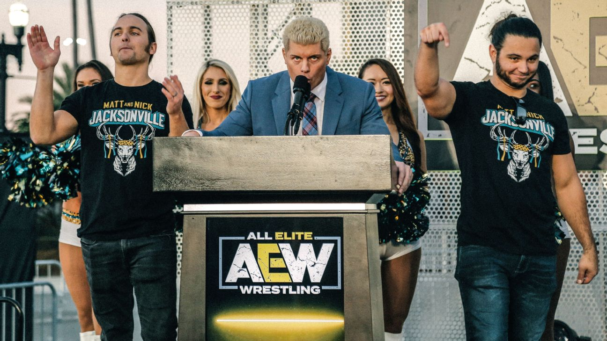

The Creation
In 2017, a wrestling journalist known as Dave Meltzer stated that the promotion Ring of Honor could not sell 10,000 tickets for a pro wrestling event. Top ROH talent Cody Rhodes and The Young Bucks, the tag team of Nick and Matt Jackson, decided to see just how true the statement from Meltzer was. This led to an event called All In, which took place in September of 2018. The show hosted other ROH talent along side independent wrestlers in what would become the largest pro wrestling event not hosted by WWE since 1999. All In sold out in just thirty minutes and had an attendence of 11,263 fans. Due to the success of the event, Cody Rhodes and The Young Bucks left Ring of Honor to start their own promotion. On January 2, 2019, Cody and The Bucks announced that themselves along with pro wrestler Kenny Omega and football executive Tony Khan were launching their own company, All Elite Wrestling.
'Rasslin in Wembley
On August 27, 2023, AEW held the second All In Pay-Per-View, the first under the All Elite Wrestling promotion. Known as All In London, AEW took their talents across the pond and held the biggest event in their promotion's history live from Wembley Stadium in London, England. All In was the first ever professional wrestling event to take place at the current day Wembley Stadium and the first time Wembley had seen wrestling since WWE's SummerSlam in 1992. There is speculation regarding the attendence that night in Wembley as AEW reported to have 81,035 fans there while the local government logged a different number in 72,265 fans. Either way, AEW absolutely packed the house and put on an unforgetable event. In the main event, homegrown AEW talent Maxwell Jacob Friedman successfully defended his AEW World Championship against former ROH and WWE standout Adam Cole. AEW put on such a great show that shortly after the event, the company anncounced that they would return to Wembley in 2024 to do it all again.
Modern Day
The current AEW product is considered world wide as the second largest professional wrestling promotion, behind the juggernaut that is WWE. In a report that came out just a few weeks ago of me writing this, as of April 2024, Forbes has ranked AEW as the third most valuable combat sports promotion on the planet. With TKO owning both of the spots ahead, this seems like where AEW will likely stay within the near future. AEW runs multiple broadcasts on a weekly basis such as: Dynamite, which airs live on Wednesday nights, Collision, which airs live on Saturday nights, and Rampage, which airs live on Satuarday nights directly after Collision. AEW perfectly serves its purpose as a promotion that increases competition in the world of pro wrestling as well as gives fans multiple styles of world class wrestling on the same show. Without AEW, we would not be seeing this current boom period that we are experiencing in pro wrestling.
